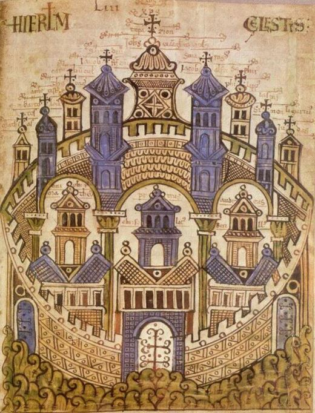

Civitas
Civitas is a project of Marsja Mudde Muziek. Civitas means civilization or city and refers to the heavenly city of Jerusalem, the city of peace with a dazzling beauty, but also to the earthly Jerusalem and the many other pilgrimage cities in Europe. In this performance, the stories of a medieval and a modern woman, both on pilgrimage, are intertwined. The medieval woman travels incognito to important pilgrimage destinations throughout Europe and in this way comes to terms with the great loss of her husband and her son. She finds comfort in the music she hears and sings everywhere and in the texts of wise contemporaries, which she reads along the way. The modern woman follows her, centuries later, with a fascination for the same music and the culture in which it originated and developed. Her “holy grail” is to find out why this music is so comforting and able to bring peace to a (her?) broken heart. Can be booked from now on.